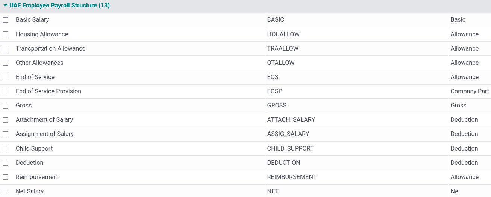

United Arab Emirates¶
Installation¶
Install the following modules to get all the features of the United Arab Emirates localization:
Name |
Technical name |
Description |
|---|---|---|
United Arab Emirates - Accounting |
|
Default fiscal localization package. Includes all accounts, taxes, and reports. |
U.A.E. - Payroll |
|
Includes all rules, calculations, and salary structures. |
U.A.E. - Payroll with Accounting |
|
Includes all accounts related to the payroll module. |
United Arab Emirates - Point of Sale |
|
Includes the UAE-compliant POS receipt. |

Chart of accounts¶
Go to to view all default accounts available for the UAE localization package. You can filter by Code using the numbers on the far left or by clicking on . You can Enable/Disable reconciliation or configure specific accounts according to your needs.
Important
Always keep at least one receivable account and one payable account active.
It is also advised to keep the accounts below active, as they are used either as transitory accounts by Odoo or are specific to the UAE localization package.
Code
Account Name
Type
102011
Accounts Receivable
Receivable
102012
Accounts Receivable (POS)
Receivable
201002
Payables
Payable
101004
Bank
Bank and Cash
105001
Cash
Bank and Cash
100001
Liquidity Transfer
Current Assets
101002
Outstanding Receipts
Current Assets
101003
Outstanding Payments
Current Assets
104041
VAT Input
Current Assets
100103
VAT Receivable
Non-current Assets
101001
Bank Suspense Account
Current Liabilities
201017
VAT Output
Current Liabilities
202001
End of Service Provision
Current Liabilities
202003
VAT Payable
Non-current Liabilities
999999
Undistributed Profits/Losses
Current Year Earnings
400003
Basic Salary
Expenses
400004
Housing Allowance
Expenses
400005
Transportation Allowance
Expenses
400008
End of Service Indemnity
Expenses
Taxes¶
To access your taxes, go to . Activate/deactivate, or configure the taxes relevant to your business by clicking on them. Remember to only set tax accounts on the 5% tax group, as other groups do not need closing. To do so, enable the developer mode and go to . Then, set a Tax current account (payable), Tax current account (receivable), and an Advance Tax payment account for the 5% group.
Note
The RCM is supported by Odoo.
Currency exchange rates¶
To update the currency exchange rates, go to . Click on the update button (🗘) found next to the Next Run field.
To launch the update automatically at set intervals, change the Interval from Manually to the desired frequency.
Note
By default, the UAE Central Bank exchange rates web service is used. Several other providers are available under the Service field.
Payroll¶
The UAE - Payroll module creates the necessary salary rules in the Payroll app in compliance with the UAE rules and regulations. The salary rules are linked to the corresponding accounts in the chart of accounts.
Salary rules¶
To apply these rules to an employee’s contract, go to and select the employee’s contract. In the Salary Structure Type field, select UAE Employee.

Under the Salary Information tab, you can find details such as the:
Wage;
Housing Allowance;
Transportation Allowance;
Other Allowances;
Number of Days: used to calculate the end of service provision.
Note
Leave deductions are calculated using a salary rule linked to the unpaid leave time-off type;
Any other deductions or reimbursements are made manually using other inputs;
Overtimes are added manually by going to ;
Salary attachments are generated by going to . Then, Create an attachment and select the Employee and the Type (Attachment of Salary, Assignment of Salary, Child Support).
Tip
To prevent a rule from appearing on a paycheck, go to . Click on UAE Employee Payroll Structure, select the rule to hide, and uncheck Appears on Payslip.
End of service provision¶
The provision is defined as the total monthly allowance divided by 30 and then multiplied by the number of days set in the field Number of days at the bottom of a contract’s form.
The provision is then calculated via a salary rule associated with two accounts: the End Of Service Indemnity (Expense account) and the End of Service Provision (Non-current Liabilities account). The latter is used to pay off the end of service amount by settling it with the payables account.
Note
The end of service amount is calculated based on the gross salary and the start and end dates of the employee’s contract.
Invoices¶
The UAE localization package allows the generation of invoices in English, Arabic, or both. The localization also includes a line to display the VAT amount per line.